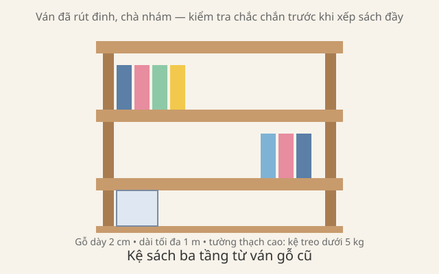

Tận dụng ván gỗ cũ làm kệ sách
Tác giả: Ruler
Ván gỗ cũ thường bị bỏ đi vì trông xước, xỉn màu hoặc không còn vừa với món đồ cũ. Nhưng với kệ sách, ván cũ lại có một lợi thế mà ván mới khó có được: vân gỗ đã hiện rõ, màu gỗ đã trầm xuống, và tấm ván đã qua thời gian nên bạn nhìn là biết nó còn chắc hay đã yếu. Bài viết này không bắt đầu từ mẫu kệ đẹp trên mạng, mà bắt đầu từ việc chọn ván. Chọn đúng ván thì kệ mới bền, chọn sai ván thì dù bạn đóng khéo đến đâu kệ vẫn có thể cong, nứt hoặc rơi sách.
Bài viết này chỉ nói về kệ sách làm từ ván gỗ cũ và gỗ pallet cũ. Bài không nói về cách trồng cây cảnh hay cắm hoa, và không dùng kệ này để đựng chậu cây nặng hay bình hoa đầy nước. Sách và đồ trang trí nhẹ là hai thứ hợp nhất với kệ gỗ cũ tự làm.
Ván nào dùng được, ván nào nên bỏ
Trước khi đo hay cắt, bạn hãy đặt tấm ván lên mặt phẳng và nhìn kỹ cả hai mặt. Ván dùng được là ván còn phẳng, không cong vênh nhiều, không có vết nứt dài chạy dọc thớ gỗ, và khi bạn ấn tay vào giữa tấm ván thì ván không lún xuống rõ rệt. Ván nên bỏ là ván đã mục, ván có mùi ẩm mốc nặng, ván bị mối mọt ăn thành nhiều lỗ nhỏ li ti, hoặc ván đã từng ngâm nước lâu ngày và bề mặt đã bở ra.
Bạn cũng cần kiểm tra đinh và ốc vít còn sót lại. Ván pallet và ván tháo từ đồ cũ thường còn đinh gãy hoặc đầu vít chìm trong gỗ. Bạn nên dùng kìm rút hết đinh ra, dùng nam châm rà lại một lượt nếu có thể, rồi mới chà nhám. Bước này tốn thời gian nhưng rất quan trọng, vì một chiếc đinh sót lại có thể làm hỏng lưỡi cưa, làm rách tay khi chà nhám, và làm xước sách khi bạn đặt sách lên kệ.
Một điểm nữa cần kiểm tra là nguồn gốc của tấm ván. Bạn không nên dùng ván đã từng đựng hóa chất, ván từ thùng hàng không rõ nguồn gốc, hoặc ván có vết sơn lạ mà bạn không biết là sơn gì. Nếu bạn không chắc tấm ván từng dùng để làm gì, hãy chọn tấm ván khác rõ ràng hơn. Với đồ dùng trong nhà, đặc biệt là kệ đặt trong phòng ngủ và phòng của trẻ, bạn nên ưu tiên ván sạch, khô và không có mùi lạ.
Dụng cụ tối thiểu cần chuẩn bị
Bạn không cần mua đủ bộ dụng cụ mộc mới làm được kệ. Với kệ sách nhỏ, bạn chỉ cần thước dây, bút chì, cưa tay, giấy nhám, tua vít hoặc khoan tay, keo dán gỗ, ốc vít và ê ke đỡ nếu làm kệ treo tường. Bạn nên chuẩn bị thêm khẩu trang vải và kính bảo vệ mắt khi chà nhám, vì bụi gỗ bay vào mắt và vào mũi rất khó chịu.
Nếu bạn chưa có khoan điện, bạn vẫn làm được kệ đứng đặt trên sàn hoặc kệ đặt trên bàn, vì hai kiểu kệ này chủ yếu dùng keo và ốc vít bắt tay. Nếu bạn muốn làm kệ treo tường, bạn nên mượn khoan hoặc nhờ người có kinh nghiệm khoan giúp, vì khoan tường cần chọn đúng mũi khoan và đúng loại nở cho từng loại tường. Bạn không nên khoan tường nhà thuê khi chưa hỏi chủ nhà, và bạn không nên treo kệ nặng bằng móc dán.
Đo sách trước khi đo ván
Nhiều người đo ván trước rồi mới xếp sách lên, nên kệ làm xong thường quá thấp hoặc quá nông. Bạn nên làm ngược lại: xếp sách thành từng chồng theo chiều cao, đo chiều cao của chồng sách cao nhất, rồi cộng thêm một khoảng trống để tay bạn lấy sách ra dễ dàng. Bạn cũng nên đo chiều sâu của cuốn sách dày nhất, để tấm ván đủ sâu cho sách không bị thò ra ngoài quá nhiều.
Một cách đo đơn giản là đặt vài cuốn sách lên bàn, đặt một tấm ván lên trên làm mặt kệ thử, rồi đặt thêm sách lên trên. Bạn sẽ thấy ngay mặt kệ cần rộng bao nhiêu và cần cao bao nhiêu. Bạn nên ghi lại ba con số này trên giấy: chiều rộng mặt kệ, chiều sâu mặt kệ và khoảng cách giữa hai tầng kệ. Ba con số này sẽ đi theo bạn suốt quá trình cắt và lắp, vì vậy bạn nên ghi bằng bút chì lên chính tấm ván sau khi đã đo xong.
Ba kiểu kệ theo không gian, không theo hình mẫu trên mạng
Kiểu thứ nhất là kệ treo một tầng cho tường trống phía trên bàn. Kiểu này hợp với phòng nhỏ vì nó không chiếm diện tích sàn. Bạn cần một tấm ván làm mặt kệ và hai ê ke đỡ. Bạn nên bắt ê ke vào tường trước, đặt ván lên ê ke rồi mới bắt vít từ dưới lên. Trước khi đặt sách lên, bạn nên ấn thử mặt kệ bằng tay để kiểm tra độ chắc. Nếu mặt kệ rung, bạn nên kiểm tra lại ốc vít và ê ke, đừng cố đặt sách nặng lên để thử.
Kiểu thứ hai là kệ đứng hai hoặc ba tầng từ gỗ pallet. Kiểu này hợp với góc phòng trống và hợp với người có nhiều sách. Bạn cần hai thanh gỗ đứng làm khung hai bên và hai hoặc ba tấm ván làm tầng kệ. Bạn nên lắp khung đứng trước, rồi mới đặt từng tầng kệ vào, bắt vít từ hai bên. Kệ đứng cần đặt sát tường và cần kiểm tra xem kệ có bị nghiêng về phía trước khi đặt sách lên hay không. Nếu kệ cao và nặng, bạn nên cố định kệ vào tường bằng dây hoặc vít chống đổ, và nên nhờ người có kinh nghiệm làm giúp bước này.
Kiểu thứ ba là kệ góc nhỏ từ ván vụn. Kiểu này hợp với góc phòng thường bị bỏ trống, và hợp với người chỉ còn vài tấm ván ngắn sau khi đã cắt cho hai kiểu kệ trên. Bạn cần hai tấm ván ngắn bắt vuông góc với nhau để tạo thành một góc kệ, rồi bắt góc kệ đó vào hai mặt tường của góc phòng. Kệ góc chỉ nên đựng sách nhẹ và đồ trang trí nhẹ, vì ván vụn thường ngắn và mỏng hơn ván nguyên tấm.
Ba kiểu kệ trên khác nhau ở cách đặt và cách chịu lực, không khác nhau ở cách xử lý ván. Dù làm kiểu nào, bạn vẫn phải làm sạch ván, chà nhám và kiểm tra chắc chắn trước khi đặt sách lên.
Chà nhám và xử lý bề mặt theo đúng thứ tự
Sau khi cắt ván theo kích thước đã đo, bạn nên chà nhám theo thứ tự từ giấy nhám thô đến giấy nhám mịn. Bạn nên chà theo chiều thớ gỗ, không chà ngang thớ gỗ, vì chà ngang dễ làm xước mặt ván. Bạn nên chà kỹ các cạnh và các góc, vì đó là nơi tay bạn chạm vào nhiều nhất khi lấy sách.
Sau khi chà nhám xong, bạn nên lau sạch bụi gỗ bằng khăn ẩm rồi để ván khô hẳn. Nếu bạn muốn ván đỡ bám bụi và đỡ thấm nước, bạn có thể quét một lớp sơn lót hoặc dầu lau gỗ. Bạn nên đọc hướng dẫn trên bao bì sơn hoặc dầu trước khi dùng, làm ở nơi thoáng khí, và để ván khô hẳn trước khi lắp. Bạn không nên sơn kệ khi ván còn ẩm, vì sơn sẽ khó bám và dễ bong.
Nếu ván có vết xước nhỏ hoặc lỗ đinh cũ, bạn có thể trám bằng bột trám gỗ, để khô rồi chà nhám lại. Bạn không nên trám lỗ quá lớn hoặc vết nứt dài, vì trám chỉ giúp bề mặt đẹp hơn, không làm ván yếu trở nên chắc hơn. Ván đã nứt dài thì nên cắt bỏ phần nứt, đừng cố dùng tiếp.
Lắp ráp và kiểm tra chắc chắn trước khi xếp sách
Khi lắp ráp, bạn nên làm trên mặt phẳng, lắp từng tầng một và kiểm tra bằng thước xem các tầng có song song với nhau hay không. Bạn nên dùng keo dán gỗ ở các mối nối, rồi mới bắt vít để giữ. Keo giúp mối nối chắc hơn, vít giúp giữ mối nối trong lúc keo khô. Bạn nên để keo khô hẳn theo thời gian ghi trên bao bì trước khi đặt sách lên kệ.
Trước khi xếp sách, bạn nên kiểm tra kệ bằng cách đặt sách từ từ, bắt đầu từ sách nhẹ và đặt đều hai bên. Bạn nên đứng nhìn từ phía trước xem kệ có bị nghiêng hay võng xuống hay không. Nếu mặt kệ võng xuống rõ rệt, bạn nên lấy sách ra, kiểm tra lại ván và ê ke, và giảm số sách trên tầng đó. Bạn không nên xếp sách nặng dồn về một phía, và không nên xếp sách cao quá mép kệ.
Với kệ treo tường, bạn nên kiểm tra lại sau một tuần sử dụng. Bạn nên nhìn xem ốc vít có bị lỏng hay không, ê ke có bị cong hay không, và tường quanh chỗ bắt vít có bị nứt hay không. Nếu có dấu hiệu bất thường, bạn nên lấy sách xuống và nhờ người có kinh nghiệm kiểm tra lại. Kệ sách rơi xuống không chỉ làm hỏng sách, mà còn có thể gây thương tích nếu rơi trúng người.
Bảo quản kệ gỗ cũ để dùng được lâu
Kệ gỗ cũ cần tránh ẩm và tránh nắng gắt trực tiếp. Bạn nên đặt kệ ở nơi khô ráo, tránh đặt sát tường bị thấm nước hoặc đặt gần cửa sổ hay bị hắt mưa. Bạn nên lau kệ bằng khăn khô hoặc khăn hơi ẩm, không nên lau bằng khăn quá ướt. Bạn nên dọn sách và lau bụi trên kệ định kỳ, vì bụi bám lâu ngày sẽ làm ván xỉn màu và khó lau sạch.
Nếu bạn muốn thay đổi màu kệ sau một thời gian, bạn nên chà nhám nhẹ bề mặt rồi mới sơn lại, thay vì sơn chồng trực tiếp lên lớp sơn cũ đã bong. Bạn nên sơn ở nơi thoáng khí và để kệ khô hẳn trước khi xếp sách trở lại.
Khi nào nên dừng và nhờ thợ
Bạn nên nhờ thợ khi kệ cần treo trên tường yếu, tường thạch cao hoặc tường đã nứt, khi kệ cần chịu nhiều sách nặng, hoặc khi bạn cần làm kệ lớn cho cả một mảng tường. Hai giới hạn có nguồn sau đây giúp bạn biết khi nào mình đang ở ngoài phạm vi tự làm: theo Best Nội Thất, tường thạch cao chỉ hợp với kệ treo tường rất nhẹ (dưới 5 kg) và phải dùng nở cánh bướm hoặc cố định vào thanh trụ bên trong tường; với tấm gỗ dày 2 cm không có điểm đỡ giữa, chiều dài an toàn tối đa là 1 m, dài hơn thì cần thêm ke đỡ hoặc trụ đỡ. Hai con số này chỉ đúng với đúng loại tường và đúng độ dày gỗ nêu trên, không áp cho mọi loại tường và mọi loại gỗ. Bạn cũng nên nhờ thợ khi bạn không có đủ dụng cụ an toàn, hoặc khi bạn đã thử làm mà kệ vẫn rung và không chắc chắn. Nhờ thợ không có nghĩa là bạn làm sai, mà có nghĩa là bạn đã nhận ra giới hạn của việc tự làm. Một chiếc kệ chắc chắn và an toàn quan trọng hơn việc bạn tự làm được mọi bước.
Kết luận
Tận dụng ván gỗ cũ làm kệ sách không khó ở bước đóng, mà khó ở bước chọn ván và bước kiểm tra chắc chắn. Bạn chỉ cần nhớ ba việc: chọn ván còn phẳng và còn chắc, đo sách trước khi đo ván, và kiểm tra kệ bằng cách đặt sách từ từ trước khi xếp đầy. Làm được ba việc đó, bạn sẽ có một chiếc kệ vừa với phòng, vừa với số sách mình có, và quan trọng nhất là bạn yên tâm khi đặt sách lên đó mỗi ngày.
Nguồn tham khảo
- Giảm Rác Nhựa, "Tái Chế Gỗ: Biến Vật Liệu Cũ Thành Kiệt Tác Độc Đáo Cho Ngôi Nhà Việt" — các bước tái chế gỗ làm kệ sách, trong đó có thu thập gỗ pallet, làm sạch, loại bỏ đinh ốc và chà nhám (truy cập 23/11/2026): https://giamracnhua.vn/tai-che/diy/tai-che-go/
- Best Nội Thất, "7 cách làm giá sách đơn giản, độc đáo từ vật liệu tái chế" — quy trình làm giá sách, trong đó có lựa chọn vật liệu, đo đạc, chà nhám, xử lý chống mối mọt và sơn phủ chống ẩm (truy cập 23/11/2026): https://bestnoithat.com/7-cach-lam-gia-sach-don-gian-doc-dao-tu-vat-lieu-tai-che/
- Acc Home, "Cách tự làm đồ trang trí phòng đơn giản" — ý tưởng tái chế ván gỗ cũ dựng thành giá sách trong phòng (truy cập 23/11/2026): https://acchome.com.vn/cach-tu-lam-do-trang-tri-phong/amp/
Phương án ảnh

Đây là sơ đồ minh họa, không phải ảnh chụp thực hành